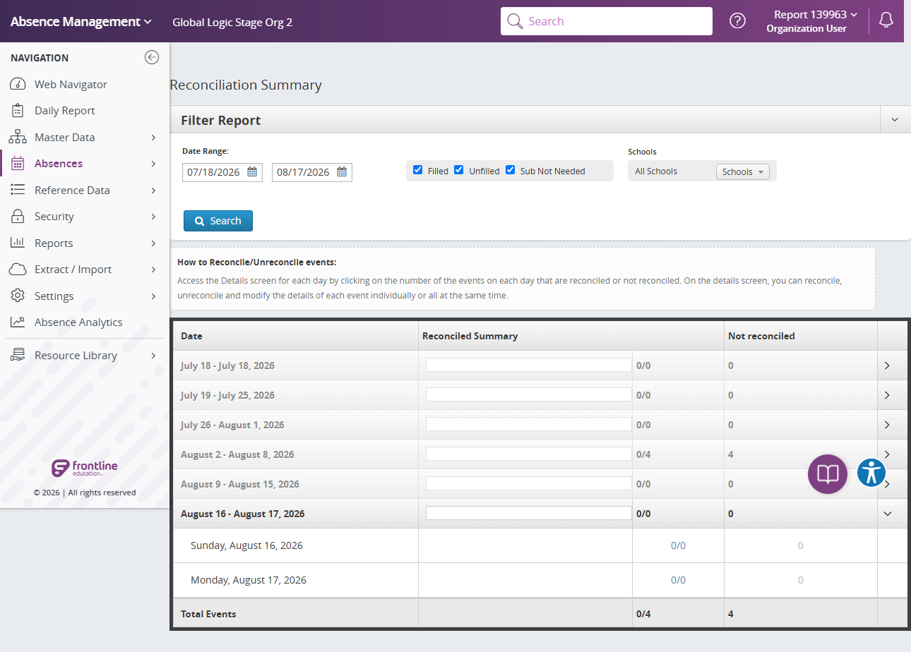

Execution 2 · Absence Navigation Tab Matrix
tests/navigation/absence-tab.md · Video 0:55–2:00
2
Execution
0:55–2:00
Continuous-video range
Unattended safe mode
Execution mode
Scenario outcome
All six Absence destinations loaded without data-changing actions.
Continuous video evidence
Screenshot evidence
{kind=link}

Complete test structure
Source: tests/navigation/absence-tab.md
# Absences Menu -> Tab Validation — AES Stage
## Execution directive
Before any browser action, read completely:
1. `instructions/project-instructions.md`
2. `instructions/application-details.md`
3. `instructions/test-data.md`
Execute this scenario directly in Chrome using Playwright MCP. Do not generate Playwright or TypeScript code. Run unattended without pausing for password entry or routine confirmation. Save both Markdown and standalone HTML execution reports under `reports/`.
## Objective
Log in to AES Stage, navigate to Absences Menu and then navigate to each submenu one by one, and validate the page rendered correctly and validate available positive, negative, and edge-case behavior without creating any record.
## Preconditions and safety
- Playwright MCP is available.
- Work only on AES Stage at `https://aesstage.flqa.net`; the authentication redirect to `https://adminwebstage2.flqa.net/` is approved.
- For this scenario, the environment-variable rules above replace the manual-password-entry instruction in `instructions/test-data.md`.
- Do not record, display, repeat, or screenshot the password.
- If validation requires a save attempt, use incomplete or intentionally invalid data so creation cannot succeed.
- During authentication, `idgatewayawsstage.flqa.net` is an approved login host. After authentication, continue only in the AES Stage application.
- For this scenario, the approved authentication redirect above is the explicit exception to the general different-host stop rule in the shared instructions.
## Steps
### 1. Launch and authenticate
1. Read the Stage URL and username from `config/aes-stage.json`.
2. Use `AES_STAGE_PASSWORD` when the environment variable is configured.
3. Otherwise, read `password` from `.secrets/aes-stage.credentials.json`.
4. If neither password source is available or the local value is still a placeholder, mark all flows **BLOCKED**, generate the HTML report, and stop before opening the browser.
### 2. Navigate to Add Employee
5. Navigate through `Absences` → `Create Absence`.
- Expected: The Create Absence page is displayed.
6. Navigate to `Absences` → `Create Vacancy`.
- Expected: The Create Vacancy page is displayed.
7. Navigate to `Absences` → `Create Substitute Absence`.
- Expected: The Create Substitute Absence page is displayed.
8. Navigate to `Absences` → `Modify` and navigate to available tabs and check the navigation
- Expected: The page should be displayed without any error.
9. Navigate to `Absences` → `Approve`.
- Expected: The Approvals page is displayed.
10. Navigate to `Absences` → `Reconcile`.
- Expected: The Reconciliation Summary page is displayed.
### 3. Positive validation
11. Identify all visible fields, required indicators, field types, dropdown options, date controls, and action buttons.
- Expected: The form structure is observable and enabled as appropriate.
12. Do not submit the completed valid form. Clear or reset the form before negative testing.
- Expected: No employee record is created.
### 4. Negative validation
13. On each create page (`Create Absence`, `Create Vacancy`, and `Create Substitute Absence`), leave all required inputs empty and select the primary continue or submit action once only when the action is enabled and the attempt cannot create a record.
- Expected: Required-field validation is displayed or the action remains disabled; the application does not create an absence or vacancy and does not show an unhandled error.
14. On `Modify`, `Approve`, and `Reconcile`, submit a blank search or filter once only when a safe read-only search control is available.
- Expected: The page shows a validation prompt, empty state, or permitted default results without an unhandled error or data change. Mark the individual case `NOT TESTED` when no safe blank search or filter is available.
15. Open the `Absences` menu and dismiss it by selecting the current page area or the menu control again without choosing a submenu.
- Expected: The menu closes, the current page and URL remain unchanged, and no action is submitted.
### 5. Edge-case validation
16. Navigate to the first and last visible Absences submenu destinations (`Create Absence` and `Reconcile`) and then return to each destination once.
- Expected: Both boundary submenu destinations render consistently on every visit without duplicate content, stale state, or an unhandled error.
17. Open and dismiss the `Absences` menu twice consecutively without selecting a submenu.
- Expected: Each open displays one copy of every available submenu, each dismissal closes the menu, and the current page remains unchanged.
18. Re-select the submenu for the currently displayed page once.
- Expected: The page remains stable or reloads cleanly, the selected submenu remains correct, and no duplicate navigation, record creation, or unhandled error occurs.
### 6. Final verification and cleanup
19. Confirm the browser is on the AES Stage application after the approved authentication redirect and the current Absences page is responsive.
- Expected: No unapproved redirect, unhandled error, or broken layout is present.
20. Clear/reset all entered test values or navigate away without saving.
- Expected: No record is created and no cleanup record is required.
## Result classification
- Mark **PASS** only if navigation succeeds and every executed validation behaves as expected.
- Mark **FAIL** for application errors, missing required validation, accepted invalid values that can be safely demonstrated, or unstable UI behavior.
- Mark **BLOCKED** for authentication, permission, environment, unavailable-control, or safety restrictions.
- Mark an individual case **NOT TESTED** when the visible form lacks the relevant control or safely triggering validation is impossible.
## Reporting
Create `reports/navigation/absence-tab/absence-tab-<YYYYMMDD-HHMMSS>.html` as a polished standalone report containing scenario totals, detailed results, interaction evidence, accepted zero-result behavior, failures with reproduction steps, route observations, and safety/cleanup status. Create the report directory when it does not exist.
At the top of the report, show separate summary cards for:
- Total flows
- Flows passed
- Flows failed
- Flows blocked
- Detailed checks passed/failed, shown separately from flow totals
Include a visually distinct **Scenario outcomes** section containing one card for each of the four flows. Every card must contain:
1. Flow number and complete flow name
2. A short actual-result summary stating whether the navigation and interaction checks worked
3. A prominent final status: **PASS**, **FAIL**, or **BLOCKED**
Example:
> **1 · Angular Daily Report → Extract / Import → Import**
>
> Angular Daily Report to Extract / Import controls were interactive; navigation completed.
>
> **PASS**
Determine each flow independently. Mark a flow **PASS** only when all required steps and shared checks used by that flow pass. Mark it **FAIL** when any required step fails, and **BLOCKED** when it cannot be completed safely. The overall report status is **PASS** only when every flow passes. Never include credentials or authentication secrets.Safety and cleanup
No password, token, cookie, or authentication fragment is included. Unattended safe mode did not create, update, or delete persistent staging records.